Prompts Gemini des cartes
La Guilde des Runes · 9 novembre · une image par prompt, dans une discussion Gemini à part · 7 cadres + 28 effets + 59 illustrations
Comment on fait
- Gemini ne dessine aucun texte. Il fait les cadres vides (un par héros) et les illustrations seules. L'appli pose le nom, le coût, les dés et l'effet par-dessus : les textes restent exacts, et un chiffre changé ne demande jamais de refaire une image.
- Cadres en cristal à la couleur de chaque héros (votre choix, d'après « Super Nova »). Le nom, le coût, la ligne des dés, l'effet et l'attaque / vie sont posés par l'appli.
- Ordre : 1) le cadre de Pip, 2) les 6 autres en joignant celui de Pip (même forme, autre couleur), 3) les 3 cartes d'essai de Pip. Je les monte en vraies cartes et je vous montre une planche AVANT de continuer avec les 56 autres.
- Pour chaque illustration, joignez le portrait du héros de la carte (lien sous chaque prompt) : il donne le style. Les cartes de la Guilde utilisent le portrait de Gorm.
- Envoyez-moi chaque image avec le nom de la carte. Chaque image reçue est cochée ✅ ici.
✅ Reçues : 12 sur 94 (cadre-pip, effet-griffes, effet-invocation, effet-degat, effet-coeur, effet-armure, effet-armure-casse, effet-pc, effet-jauge, effet-ronces, seve, louve) · Il reste : 82
1. Les cadres
✅ Cadre de Pip (violet, le premier) cadre-pip
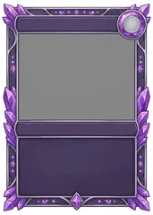
📎 Joignez le portrait de Pip (télécharger).
Using the attached image only as a strict style reference (same digital painted style, same soft outlines, same warm main light with cool magical highlights, same level of detail), design an EMPTY frame for a fantasy trading card, vertical 5:7 format, seen perfectly flat from the front and filling the whole image, on a pure white background (no table, no hand, no perspective). The border is made of carved RUNE CRYSTAL: faceted VIOLET amethyst crystal shards and dark violet stone, with small glowing violet abstract rune marks (dots, short curves, tiny diamonds, never letters) and thin silver trims, a few crystal spikes sticking out of the corners. Layout from top to bottom, all perfectly symmetrical: a wide STRAIGHT name plate across the top, plain flat dark violet and EMPTY; a round faceted crystal gem socket at the top right corner, EMPTY flat center; a large window (about 55% of the height) filled with plain flat medium grey; a thin straight horizontal band under the window, plain flat dark violet and EMPTY (for the dice condition); a text box in the lower part, plain flat dark violet stone and EMPTY; a small diamond-shaped crystal at the bottom center. Everything must stay empty: no picture, no writing, no symbol inside the plates, the band or the text box. Generous readable shapes that stay clear at small size on a phone, visible brush texture, saturated but gentle colors. No text, no letters, no numbers, no logo, no signature, no watermark.
Cadre de Maëlle (orange forge) cadre-maelle
📎 Joignez le cadre de Pip que Gemini vient de faire.
Edit the attached image. Keep EXACTLY the same card frame: same shape, same layout, same sizes and positions of the name plate, the gem socket, the grey window, the thin band, the text box and the bottom crystal, same crystal spikes, same white background. Change ONLY the colors and the crystal: glowing orange-amber fire crystal and dark bronze stone, warm orange rune marks, copper trims, the plates and text box plain dark bronze. Keep the plates, the band and the text box plain, flat and empty. Generous readable shapes that stay clear at small size on a phone, visible brush texture, saturated but gentle colors. No text, no letters, no numbers, no logo, no signature, no watermark.
Cadre d’Aldric (or et blanc) cadre-aldric
📎 Joignez le cadre de Pip.
Edit the attached image. Keep EXACTLY the same card frame: same shape, same layout, same sizes and positions of the name plate, the gem socket, the grey window, the thin band, the text box and the bottom crystal, same crystal spikes, same white background. Change ONLY the colors and the crystal: clear white-gold citrine crystal and pale ivory stone, golden glowing rune marks, gold trims, the plates and text box plain deep navy blue. Keep the plates, the band and the text box plain, flat and empty. Generous readable shapes that stay clear at small size on a phone, visible brush texture, saturated but gentle colors. No text, no letters, no numbers, no logo, no signature, no watermark.
Cadre d’Oria (turquoise) cadre-oria
📎 Joignez le cadre de Pip.
Edit the attached image. Keep EXACTLY the same card frame: same shape, same layout, same sizes and positions of the name plate, the gem socket, the grey window, the thin band, the text box and the bottom crystal, same crystal spikes, same white background. Change ONLY the colors and the crystal: turquoise aquamarine crystal and dark teal stone, turquoise glowing rune marks, silver trims, the plates and text box plain dark teal. Keep the plates, the band and the text box plain, flat and empty. Generous readable shapes that stay clear at small size on a phone, visible brush texture, saturated but gentle colors. No text, no letters, no numbers, no logo, no signature, no watermark.
Cadre de Gorm (bleu profond) cadre-gorm
📎 Joignez le cadre de Pip.
Edit the attached image. Keep EXACTLY the same card frame: same shape, same layout, same sizes and positions of the name plate, the gem socket, the grey window, the thin band, the text box and the bottom crystal, same crystal spikes, same white background. Change ONLY the colors and the crystal: deep sapphire-blue crystal and dark slate stone, bright blue glowing rune marks, brass trims, the plates and text box plain dark navy. Keep the plates, the band and the text box plain, flat and empty. Generous readable shapes that stay clear at small size on a phone, visible brush texture, saturated but gentle colors. No text, no letters, no numbers, no logo, no signature, no watermark.
Cadre de Zéphine (rubis) cadre-zephine
📎 Joignez le cadre de Pip.
Edit the attached image. Keep EXACTLY the same card frame: same shape, same layout, same sizes and positions of the name plate, the gem socket, the grey window, the thin band, the text box and the bottom crystal, same crystal spikes, same white background. Change ONLY the colors and the crystal: ruby-red crystal with a few acid-green glints and dark wine stone, red glowing rune marks, gold trims, the plates and text box plain dark wine red. Keep the plates, the band and the text box plain, flat and empty. Generous readable shapes that stay clear at small size on a phone, visible brush texture, saturated but gentle colors. No text, no letters, no numbers, no logo, no signature, no watermark.
Cadre de la Guilde (argent, cartes communes) cadre-guilde
📎 Joignez le cadre de Pip.
Edit the attached image. Keep EXACTLY the same card frame: same shape, same layout, same sizes and positions of the name plate, the gem socket, the grey window, the thin band, the text box and the bottom crystal, same crystal spikes, same white background. Change ONLY the colors and the crystal: pale silver-grey quartz crystal and grey granite stone, soft white glowing rune marks, steel trims, the plates and text box plain dark charcoal. Keep the plates, the band and the text box plain, flat and empty. Generous readable shapes that stay clear at small size on a phone, visible brush texture, saturated but gentle colors. No text, no letters, no numbers, no logo, no signature, no watermark.
2. Les effets d'attaque (dessinés par Gemini, animés par l'appli)
- Gemini dessine chaque effet immobile ; l'appli le fait vivre : les griffures apparaissent l'une après l'autre en se déchirant, les cercles tournent et grandissent, le marteau s'abat, la flèche file, puis tout s'efface.
- Les effets lumineux sont sur fond noir (l'appli fait disparaître le noir pour ne garder que la lumière) ; le marteau, la flèche et les ronces sont sur fond blanc (je les découpe).
- Les griffes sont faites et animées. Ensuite, en priorité, ceux de tous les combats : perte de vie, gros coup, vie gagnée, armure gagnée, armure qui encaisse ; puis les effets de chaque héros.
✅ Griffes (la Louve, les bêtes) effet-griffes
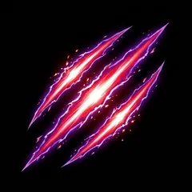
📎 Joignez le portrait final de Gorm (modèle de style).
Using the attached image only as a strict style reference (same digital painted style, same soft outlines, same warm main light with cool magical highlights, same level of detail), paint a single VISUAL EFFECT for a fantasy card game, square 1:1 format, centered with empty space around it, on a PURE BLACK background (#000000, completely flat, nothing else in the background). Effect: three parallel diagonal claw slash marks tearing through the air from top right to bottom left, white-hot cores with a vivid red and violet glow, small sparks and torn energy fragments along the edges. Bright, luminous, saturated colors that glow against the black, painted look matching the reference. No character, no creature, no object other than the effect. Generous readable shapes that stay clear at small size on a phone, visible brush texture, saturated but gentle colors. No text, no letters, no numbers, no logo, no signature, no watermark.
Coup d’épée (Aldric, soldats) effet-lame
📎 Joignez le portrait final de Gorm (modèle de style).
Using the attached image only as a strict style reference (same digital painted style, same soft outlines, same warm main light with cool magical highlights, same level of detail), paint a single VISUAL EFFECT for a fantasy card game, square 1:1 format, centered with empty space around it, on a PURE BLACK background (#000000, completely flat, nothing else in the background). Effect: one wide curved sword slash arc, bright white-silver core with a golden glow, motion streaks. Bright, luminous, saturated colors that glow against the black, painted look matching the reference. No character, no creature, no object other than the effect. Generous readable shapes that stay clear at small size on a phone, visible brush texture, saturated but gentle colors. No text, no letters, no numbers, no logo, no signature, no watermark.
Impact (coup commun) effet-impact
📎 Joignez le portrait final de Gorm (modèle de style).
Using the attached image only as a strict style reference (same digital painted style, same soft outlines, same warm main light with cool magical highlights, same level of detail), paint a single VISUAL EFFECT for a fantasy card game, square 1:1 format, centered with empty space around it, on a PURE BLACK background (#000000, completely flat, nothing else in the background). Effect: a sharp star-shaped impact burst, white center with golden-orange rays and small debris sparks. Bright, luminous, saturated colors that glow against the black, painted look matching the reference. No character, no creature, no object other than the effect. Generous readable shapes that stay clear at small size on a phone, visible brush texture, saturated but gentle colors. No text, no letters, no numbers, no logo, no signature, no watermark.
Lumière (Aldric) effet-lumiere
📎 Joignez le portrait final de Gorm (modèle de style).
Using the attached image only as a strict style reference (same digital painted style, same soft outlines, same warm main light with cool magical highlights, same level of detail), paint a single VISUAL EFFECT for a fantasy card game, square 1:1 format, centered with empty space around it, on a PURE BLACK background (#000000, completely flat, nothing else in the background). Effect: a radiant burst of holy-looking golden light rays from a bright center, soft halo, floating light particles (no religious symbol, no cross). Bright, luminous, saturated colors that glow against the black, painted look matching the reference. No character, no creature, no object other than the effect. Generous readable shapes that stay clear at small size on a phone, visible brush texture, saturated but gentle colors. No text, no letters, no numbers, no logo, no signature, no watermark.
Étincelles et feu (Maëlle) effet-etincelles
📎 Joignez le portrait final de Gorm (modèle de style).
Using the attached image only as a strict style reference (same digital painted style, same soft outlines, same warm main light with cool magical highlights, same level of detail), paint a single VISUAL EFFECT for a fantasy card game, square 1:1 format, centered with empty space around it, on a PURE BLACK background (#000000, completely flat, nothing else in the background). Effect: an explosion of glowing forge sparks and small orange flames bursting outward from the center. Bright, luminous, saturated colors that glow against the black, painted look matching the reference. No character, no creature, no object other than the effect. Generous readable shapes that stay clear at small size on a phone, visible brush texture, saturated but gentle colors. No text, no letters, no numbers, no logo, no signature, no watermark.
Étoiles (Oria) effet-etoiles
📎 Joignez le portrait final de Gorm (modèle de style).
Using the attached image only as a strict style reference (same digital painted style, same soft outlines, same warm main light with cool magical highlights, same level of detail), paint a single VISUAL EFFECT for a fantasy card game, square 1:1 format, centered with empty space around it, on a PURE BLACK background (#000000, completely flat, nothing else in the background). Effect: a burst of glowing turquoise four-pointed stars and star dust spiraling outward from the center. Bright, luminous, saturated colors that glow against the black, painted look matching the reference. No character, no creature, no object other than the effect. Generous readable shapes that stay clear at small size on a phone, visible brush texture, saturated but gentle colors. No text, no letters, no numbers, no logo, no signature, no watermark.
Ondes sonores (Gorm) effet-ondes
📎 Joignez le portrait final de Gorm (modèle de style).
Using the attached image only as a strict style reference (same digital painted style, same soft outlines, same warm main light with cool magical highlights, same level of detail), paint a single VISUAL EFFECT for a fantasy card game, square 1:1 format, centered with empty space around it, on a PURE BLACK background (#000000, completely flat, nothing else in the background). Effect: three concentric glowing blue sound-wave rings expanding from the center with small musical note shapes made of light. Bright, luminous, saturated colors that glow against the black, painted look matching the reference. No character, no creature, no object other than the effect. Generous readable shapes that stay clear at small size on a phone, visible brush texture, saturated but gentle colors. No text, no letters, no numbers, no logo, no signature, no watermark.
Rafale de vent (Gorm) effet-vent
📎 Joignez le portrait final de Gorm (modèle de style).
Using the attached image only as a strict style reference (same digital painted style, same soft outlines, same warm main light with cool magical highlights, same level of detail), paint a single VISUAL EFFECT for a fantasy card game, square 1:1 format, centered with empty space around it, on a PURE BLACK background (#000000, completely flat, nothing else in the background). Effect: three sharp curved white-blue wind slashes sweeping horizontally, with leaves and dust in the gust. Bright, luminous, saturated colors that glow against the black, painted look matching the reference. No character, no creature, no object other than the effect. Generous readable shapes that stay clear at small size on a phone, visible brush texture, saturated but gentle colors. No text, no letters, no numbers, no logo, no signature, no watermark.
Poison (Zéphine) effet-poison
📎 Joignez le portrait final de Gorm (modèle de style).
Using the attached image only as a strict style reference (same digital painted style, same soft outlines, same warm main light with cool magical highlights, same level of detail), paint a single VISUAL EFFECT for a fantasy card game, square 1:1 format, centered with empty space around it, on a PURE BLACK background (#000000, completely flat, nothing else in the background). Effect: a splash of glowing acid-green poison liquid with bubbles and droplets flying outward, a little violet smoke. Bright, luminous, saturated colors that glow against the black, painted look matching the reference. No character, no creature, no object other than the effect. Generous readable shapes that stay clear at small size on a phone, visible brush texture, saturated but gentle colors. No text, no letters, no numbers, no logo, no signature, no watermark.
Brume (Zéphine) effet-brume
📎 Joignez le portrait final de Gorm (modèle de style).
Using the attached image only as a strict style reference (same digital painted style, same soft outlines, same warm main light with cool magical highlights, same level of detail), paint a single VISUAL EFFECT for a fantasy card game, square 1:1 format, centered with empty space around it, on a PURE BLACK background (#000000, completely flat, nothing else in the background). Effect: a thick swirling cloud of violet magical smoke with faint sparkles inside. Bright, luminous, saturated colors that glow against the black, painted look matching the reference. No character, no creature, no object other than the effect. Generous readable shapes that stay clear at small size on a phone, visible brush texture, saturated but gentle colors. No text, no letters, no numbers, no logo, no signature, no watermark.
Cercle d’alchimie (Zéphine) effet-alchimie
📎 Joignez le portrait final de Gorm (modèle de style).
Using the attached image only as a strict style reference (same digital painted style, same soft outlines, same warm main light with cool magical highlights, same level of detail), paint a single VISUAL EFFECT for a fantasy card game, square 1:1 format, centered with empty space around it, on a PURE BLACK background (#000000, completely flat, nothing else in the background). Effect: a glowing violet alchemy circle seen from the front, made of rings and geometric runes (no letters), with sparkles. Bright, luminous, saturated colors that glow against the black, painted look matching the reference. No character, no creature, no object other than the effect. Generous readable shapes that stay clear at small size on a phone, visible brush texture, saturated but gentle colors. No text, no letters, no numbers, no logo, no signature, no watermark.
Bouclier magique (Garde) effet-bouclier
📎 Joignez le portrait final de Gorm (modèle de style).
Using the attached image only as a strict style reference (same digital painted style, same soft outlines, same warm main light with cool magical highlights, same level of detail), paint a single VISUAL EFFECT for a fantasy card game, square 1:1 format, centered with empty space around it, on a PURE BLACK background (#000000, completely flat, nothing else in the background). Effect: a glowing blue hexagonal energy shield seen from the front, made of small hexagon cells, bright rim. Bright, luminous, saturated colors that glow against the black, painted look matching the reference. No character, no creature, no object other than the effect. Generous readable shapes that stay clear at small size on a phone, visible brush texture, saturated but gentle colors. No text, no letters, no numbers, no logo, no signature, no watermark.
Soin (Pip, potions) effet-soin
📎 Joignez le portrait final de Gorm (modèle de style).
Using the attached image only as a strict style reference (same digital painted style, same soft outlines, same warm main light with cool magical highlights, same level of detail), paint a single VISUAL EFFECT for a fantasy card game, square 1:1 format, centered with empty space around it, on a PURE BLACK background (#000000, completely flat, nothing else in the background). Effect: a swirl of glowing green healing light with small leaves and sparkles rising upward. Bright, luminous, saturated colors that glow against the black, painted look matching the reference. No character, no creature, no object other than the effect. Generous readable shapes that stay clear at small size on a phone, visible brush texture, saturated but gentle colors. No text, no letters, no numbers, no logo, no signature, no watermark.
✅ Arrivée d’une créature effet-invocation
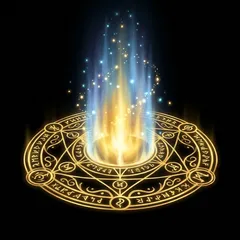
📎 Joignez le portrait final de Gorm (modèle de style).
Using the attached image only as a strict style reference (same digital painted style, same soft outlines, same warm main light with cool magical highlights, same level of detail), paint a single VISUAL EFFECT for a fantasy card game, square 1:1 format, centered with empty space around it, on a PURE BLACK background (#000000, completely flat, nothing else in the background). Effect: a golden summoning circle on the ground seen slightly from above, with a column of light and sparkles rising. Bright, luminous, saturated colors that glow against the black, painted look matching the reference. No character, no creature, no object other than the effect. Generous readable shapes that stay clear at small size on a phone, visible brush texture, saturated but gentle colors. No text, no letters, no numbers, no logo, no signature, no watermark.
✅ Perte de vie (héros touché) effet-degat
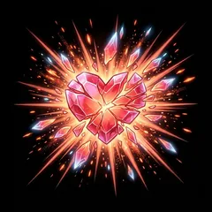
📎 Joignez le portrait final de Gorm (modèle de style).
Using the attached image only as a strict style reference (same digital painted style, same soft outlines, same warm main light with cool magical highlights, same level of detail), paint a single VISUAL EFFECT for a fantasy card game, square 1:1 format, centered with empty space around it, on a PURE BLACK background (#000000, completely flat, nothing else in the background). Effect: a violent red and orange hit burst: a shattered red heart-shaped crystal breaking into glowing shards, sharp impact rays, small sparks (no blood). Bright, luminous, saturated colors that glow against the black, painted look matching the reference. No character, no creature, no object other than the effect. Generous readable shapes that stay clear at small size on a phone, visible brush texture, saturated but gentle colors. No text, no letters, no numbers, no logo, no signature, no watermark.
Gros coup (8 dégâts ou plus) effet-gros-degat
📎 Joignez le portrait final de Gorm (modèle de style).
Using the attached image only as a strict style reference (same digital painted style, same soft outlines, same warm main light with cool magical highlights, same level of detail), paint a single VISUAL EFFECT for a fantasy card game, square 1:1 format, centered with empty space around it, on a PURE BLACK background (#000000, completely flat, nothing else in the background). Effect: a huge explosive impact: a big red and gold starburst shockwave with cracks of light, shards and sparks flying in every direction (no blood). Bright, luminous, saturated colors that glow against the black, painted look matching the reference. No character, no creature, no object other than the effect. Generous readable shapes that stay clear at small size on a phone, visible brush texture, saturated but gentle colors. No text, no letters, no numbers, no logo, no signature, no watermark.
✅ Vie gagnée (soin du héros) effet-coeur
📎 Joignez le portrait final de Gorm (modèle de style).
Using the attached image only as a strict style reference (same digital painted style, same soft outlines, same warm main light with cool magical highlights, same level of detail), paint a single VISUAL EFFECT for a fantasy card game, square 1:1 format, centered with empty space around it, on a PURE BLACK background (#000000, completely flat, nothing else in the background). Effect: a glowing green and pink heart made of light rising from a swirl of healing sparkles and small leaves, warm and gentle. Bright, luminous, saturated colors that glow against the black, painted look matching the reference. No character, no creature, no object other than the effect. Generous readable shapes that stay clear at small size on a phone, visible brush texture, saturated but gentle colors. No text, no letters, no numbers, no logo, no signature, no watermark.
✅ Armure gagnée (Bouclier, Garde) effet-armure
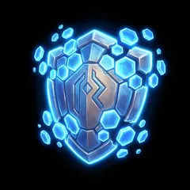
📎 Joignez le portrait final de Gorm (modèle de style).
Using the attached image only as a strict style reference (same digital painted style, same soft outlines, same warm main light with cool magical highlights, same level of detail), paint a single VISUAL EFFECT for a fantasy card game, square 1:1 format, centered with empty space around it, on a PURE BLACK background (#000000, completely flat, nothing else in the background). Effect: a sturdy blue-silver magical shield materializing from glowing hexagon fragments that assemble together, bright rim light. Bright, luminous, saturated colors that glow against the black, painted look matching the reference. No character, no creature, no object other than the effect. Generous readable shapes that stay clear at small size on a phone, visible brush texture, saturated but gentle colors. No text, no letters, no numbers, no logo, no signature, no watermark.
✅ Armure qui encaisse (bouclier touché) effet-armure-casse
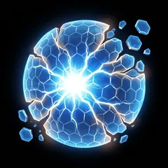
📎 Joignez le portrait final de Gorm (modèle de style).
Using the attached image only as a strict style reference (same digital painted style, same soft outlines, same warm main light with cool magical highlights, same level of detail), paint a single VISUAL EFFECT for a fantasy card game, square 1:1 format, centered with empty space around it, on a PURE BLACK background (#000000, completely flat, nothing else in the background). Effect: a blue magical shield cracking with bright white fractures and a few hexagon pieces breaking off, flash of light at the impact point. Bright, luminous, saturated colors that glow against the black, painted look matching the reference. No character, no creature, no object other than the effect. Generous readable shapes that stay clear at small size on a phone, visible brush texture, saturated but gentle colors. No text, no letters, no numbers, no logo, no signature, no watermark.
Poison qui ronge (début de tour) effet-poison-tic
📎 Joignez le portrait final de Gorm (modèle de style).
Using the attached image only as a strict style reference (same digital painted style, same soft outlines, same warm main light with cool magical highlights, same level of detail), paint a single VISUAL EFFECT for a fantasy card game, square 1:1 format, centered with empty space around it, on a PURE BLACK background (#000000, completely flat, nothing else in the background). Effect: a small sickly green skull-free toxic cloud with bubbling droplets and a pulsing green glow. Bright, luminous, saturated colors that glow against the black, painted look matching the reference. No character, no creature, no object other than the effect. Generous readable shapes that stay clear at small size on a phone, visible brush texture, saturated but gentle colors. No text, no letters, no numbers, no logo, no signature, no watermark.
✅ PC gagnés (vente d’un dé) effet-pc
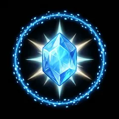
📎 Joignez le portrait final de Gorm (modèle de style).
Using the attached image only as a strict style reference (same digital painted style, same soft outlines, same warm main light with cool magical highlights, same level of detail), paint a single VISUAL EFFECT for a fantasy card game, square 1:1 format, centered with empty space around it, on a PURE BLACK background (#000000, completely flat, nothing else in the background). Effect: a bright blue faceted crystal gem appearing with a sparkle and a ring of blue light particles. Bright, luminous, saturated colors that glow against the black, painted look matching the reference. No character, no creature, no object other than the effect. Generous readable shapes that stay clear at small size on a phone, visible brush texture, saturated but gentle colors. No text, no letters, no numbers, no logo, no signature, no watermark.
✅ Jauge d’Ultime pleine effet-jauge
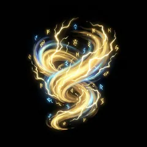
📎 Joignez le portrait final de Gorm (modèle de style).
Using the attached image only as a strict style reference (same digital painted style, same soft outlines, same warm main light with cool magical highlights, same level of detail), paint a single VISUAL EFFECT for a fantasy card game, square 1:1 format, centered with empty space around it, on a PURE BLACK background (#000000, completely flat, nothing else in the background). Effect: a powerful golden aura of lightning and light swirling upward like a rising energy column, small rune marks (no letters) floating. Bright, luminous, saturated colors that glow against the black, painted look matching the reference. No character, no creature, no object other than the effect. Generous readable shapes that stay clear at small size on a phone, visible brush texture, saturated but gentle colors. No text, no letters, no numbers, no logo, no signature, no watermark.
Créature vaincue effet-mort
📎 Joignez le portrait final de Gorm (modèle de style).
Using the attached image only as a strict style reference (same digital painted style, same soft outlines, same warm main light with cool magical highlights, same level of detail), paint a single VISUAL EFFECT for a fantasy card game, square 1:1 format, centered with empty space around it, on a PURE BLACK background (#000000, completely flat, nothing else in the background). Effect: a creature silhouette dissolving into glowing golden dust and light motes blown away by the wind, peaceful (no body, no blood). Bright, luminous, saturated colors that glow against the black, painted look matching the reference. No character, no creature, no object other than the effect. Generous readable shapes that stay clear at small size on a phone, visible brush texture, saturated but gentle colors. No text, no letters, no numbers, no logo, no signature, no watermark.
Victoire effet-victoire
📎 Joignez le portrait final de Gorm (modèle de style).
Using the attached image only as a strict style reference (same digital painted style, same soft outlines, same warm main light with cool magical highlights, same level of detail), paint a single VISUAL EFFECT for a fantasy card game, square 1:1 format, centered with empty space around it, on a PURE BLACK background (#000000, completely flat, nothing else in the background). Effect: a triumphant explosion of golden light with confetti-like sparkles, a laurel wreath shape made of light in the center (no letters). Bright, luminous, saturated colors that glow against the black, painted look matching the reference. No character, no creature, no object other than the effect. Generous readable shapes that stay clear at small size on a phone, visible brush texture, saturated but gentle colors. No text, no letters, no numbers, no logo, no signature, no watermark.
Défaite effet-defaite
📎 Joignez le portrait final de Gorm (modèle de style).
Using the attached image only as a strict style reference (same digital painted style, same soft outlines, same warm main light with cool magical highlights, same level of detail), paint a single VISUAL EFFECT for a fantasy card game, square 1:1 format, centered with empty space around it, on a PURE BLACK background (#000000, completely flat, nothing else in the background). Effect: a broken grey-blue crystal shield falling apart into dark shards with fading violet smoke, melancholic (no skull, no letters). Bright, luminous, saturated colors that glow against the black, painted look matching the reference. No character, no creature, no object other than the effect. Generous readable shapes that stay clear at small size on a phone, visible brush texture, saturated but gentle colors. No text, no letters, no numbers, no logo, no signature, no watermark.
Marteau (Maëlle) effet-marteau
📎 Joignez le portrait final de Gorm (modèle de style).
Using the attached image only as a strict style reference (same digital painted style, same soft outlines, same warm main light with cool magical highlights, same level of detail), paint a single OBJECT used as an animated effect in a fantasy card game, square 1:1 format, centered with empty space around it, on a PURE WHITE background (#FFFFFF, completely flat, no shadow on the ground). Object: a big blacksmith forge hammer with a glowing orange-hot head, seen from the side, tilted as if swinging down. Clean outline so it can be cut out. Generous readable shapes that stay clear at small size on a phone, visible brush texture, saturated but gentle colors. No text, no letters, no numbers, no logo, no signature, no watermark.
Flèche (Oria) effet-fleche
📎 Joignez le portrait final de Gorm (modèle de style).
Using the attached image only as a strict style reference (same digital painted style, same soft outlines, same warm main light with cool magical highlights, same level of detail), paint a single OBJECT used as an animated effect in a fantasy card game, square 1:1 format, centered with empty space around it, on a PURE WHITE background (#FFFFFF, completely flat, no shadow on the ground). Object: a single feathered arrow seen from the side pointing right, with a glowing turquoise star-shaped tip. Clean outline so it can be cut out. Generous readable shapes that stay clear at small size on a phone, visible brush texture, saturated but gentle colors. No text, no letters, no numbers, no logo, no signature, no watermark.
✅ Ronces (Pip) effet-ronces
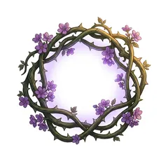
📎 Joignez le portrait final de Gorm (modèle de style).
Using the attached image only as a strict style reference (same digital painted style, same soft outlines, same warm main light with cool magical highlights, same level of detail), paint a single OBJECT used as an animated effect in a fantasy card game, square 1:1 format, centered with empty space around it, on a PURE WHITE background (#FFFFFF, completely flat, no shadow on the ground). Object: a curling thorny bramble vine forming a loose ring, with small violet flowers and a faint violet magic glow. Clean outline so it can be cut out. Generous readable shapes that stay clear at small size on a phone, visible brush texture, saturated but gentle colors. No text, no letters, no numbers, no logo, no signature, no watermark.
3. L'essai : 3 cartes de Pip
✅ La Louve louve
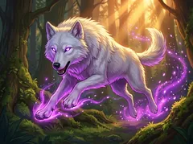
📎 Joignez le portrait de Pip (télécharger) : modèle de style.
Using the attached image only as a strict style reference (same digital painted style, same soft outlines, same warm main light with cool magical highlights, same level of detail), paint the ILLUSTRATION of a fantasy trading card, horizontal 4:3 format, edge to edge, with NO frame, NO border and NO card shape: only the picture. Subject: a big white wolf with violet glowing eyes in an attacking leap, protective and noble, not scary. Enchanted forest palette: mossy greens, violet magic glow, warm sunbeams. DYNAMIC ACTION scene: the subject in motion, seen from a close and slightly low camera angle, dramatic lighting with bright magical glows and particles, strong contrast between the glowing subject and a darker background with depth. One clear subject, big in the picture. Child-friendly: no blood, nothing gory or scary. Generous readable shapes that stay clear at small size on a phone, visible brush texture, saturated but gentle colors. No text, no letters, no numbers, no logo, no signature, no watermark.
✅ Sève guérisseuse seve
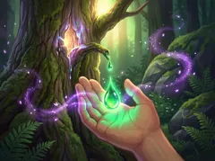
📎 Joignez le portrait de Pip (télécharger) : modèle de style.
Using the attached image only as a strict style reference (same digital painted style, same soft outlines, same warm main light with cool magical highlights, same level of detail), paint the ILLUSTRATION of a fantasy trading card, horizontal 4:3 format, edge to edge, with NO frame, NO border and NO card shape: only the picture. Subject: glowing green sap dripping from a magical tree bark into cupped hands, healing light. Enchanted forest palette: mossy greens, violet magic glow, warm sunbeams. DYNAMIC ACTION scene: the subject in motion, seen from a close and slightly low camera angle, dramatic lighting with bright magical glows and particles, strong contrast between the glowing subject and a darker background with depth. One clear subject, big in the picture. Child-friendly: no blood, nothing gory or scary. Generous readable shapes that stay clear at small size on a phone, visible brush texture, saturated but gentle colors. No text, no letters, no numbers, no logo, no signature, no watermark.
Racines entravantes racines
📎 Joignez le portrait de Pip (télécharger) : modèle de style.
Using the attached image only as a strict style reference (same digital painted style, same soft outlines, same warm main light with cool magical highlights, same level of detail), paint the ILLUSTRATION of a fantasy trading card, horizontal 4:3 format, edge to edge, with NO frame, NO border and NO card shape: only the picture. Subject: huge tree roots bursting from the ground and wrapping tightly around a struggling creature. Enchanted forest palette: mossy greens, violet magic glow, warm sunbeams. DYNAMIC ACTION scene: the subject in motion, seen from a close and slightly low camera angle, dramatic lighting with bright magical glows and particles, strong contrast between the glowing subject and a darker background with depth. One clear subject, big in the picture. Child-friendly: no blood, nothing gory or scary. Generous readable shapes that stay clear at small size on a phone, visible brush texture, saturated but gentle colors. No text, no letters, no numbers, no logo, no signature, no watermark.
Maëlle
Marteau de forge marteau
📎 Joignez le portrait de Maëlle (télécharger) : modèle de style.
Using the attached image only as a strict style reference (same digital painted style, same soft outlines, same warm main light with cool magical highlights, same level of detail), paint the ILLUSTRATION of a fantasy trading card, horizontal 4:3 format, edge to edge, with NO frame, NO border and NO card shape: only the picture. Subject: a huge glowing forge hammer coming down on an anvil, a burst of orange sparks and a shockwave. Warm forge palette: glowing orange embers, bronze, soot-dark stone. DYNAMIC ACTION scene: the subject in motion, seen from a close and slightly low camera angle, dramatic lighting with bright magical glows and particles, strong contrast between the glowing subject and a darker background with depth. One clear subject, big in the picture. Child-friendly: no blood, nothing gory or scary. Generous readable shapes that stay clear at small size on a phone, visible brush texture, saturated but gentle colors. No text, no letters, no numbers, no logo, no signature, no watermark.
Lame trempée lame
📎 Joignez le portrait de Maëlle (télécharger) : modèle de style.
Using the attached image only as a strict style reference (same digital painted style, same soft outlines, same warm main light with cool magical highlights, same level of detail), paint the ILLUSTRATION of a fantasy trading card, horizontal 4:3 format, edge to edge, with NO frame, NO border and NO card shape: only the picture. Subject: a freshly forged sword blade being plunged into a water barrel, a big cloud of steam, the blade glowing orange. Warm forge palette: glowing orange embers, bronze, soot-dark stone. DYNAMIC ACTION scene: the subject in motion, seen from a close and slightly low camera angle, dramatic lighting with bright magical glows and particles, strong contrast between the glowing subject and a darker background with depth. One clear subject, big in the picture. Child-friendly: no blood, nothing gory or scary. Generous readable shapes that stay clear at small size on a phone, visible brush texture, saturated but gentle colors. No text, no letters, no numbers, no logo, no signature, no watermark.
Apprenti du soufflet apprenti
📎 Joignez le portrait de Maëlle (télécharger) : modèle de style.
Using the attached image only as a strict style reference (same digital painted style, same soft outlines, same warm main light with cool magical highlights, same level of detail), paint the ILLUSTRATION of a fantasy trading card, horizontal 4:3 format, edge to edge, with NO frame, NO border and NO card shape: only the picture. Subject: a cheerful young forge apprentice with a soot-smudged face pumping a big leather bellows, embers flying. Warm forge palette: glowing orange embers, bronze, soot-dark stone. DYNAMIC ACTION scene: the subject in motion, seen from a close and slightly low camera angle, dramatic lighting with bright magical glows and particles, strong contrast between the glowing subject and a darker background with depth. One clear subject, big in the picture. Child-friendly: no blood, nothing gory or scary. Generous readable shapes that stay clear at small size on a phone, visible brush texture, saturated but gentle colors. No text, no letters, no numbers, no logo, no signature, no watermark.
Plastron rivé plastron
📎 Joignez le portrait de Maëlle (télécharger) : modèle de style.
Using the attached image only as a strict style reference (same digital painted style, same soft outlines, same warm main light with cool magical highlights, same level of detail), paint the ILLUSTRATION of a fantasy trading card, horizontal 4:3 format, edge to edge, with NO frame, NO border and NO card shape: only the picture. Subject: a sturdy riveted steel breastplate on a wooden armor stand in the forge, warm firelight on the metal. Warm forge palette: glowing orange embers, bronze, soot-dark stone. DYNAMIC ACTION scene: the subject in motion, seen from a close and slightly low camera angle, dramatic lighting with bright magical glows and particles, strong contrast between the glowing subject and a darker background with depth. One clear subject, big in the picture. Child-friendly: no blood, nothing gory or scary. Generous readable shapes that stay clear at small size on a phone, visible brush texture, saturated but gentle colors. No text, no letters, no numbers, no logo, no signature, no watermark.
Étincelles etincelles
📎 Joignez le portrait de Maëlle (télécharger) : modèle de style.
Using the attached image only as a strict style reference (same digital painted style, same soft outlines, same warm main light with cool magical highlights, same level of detail), paint the ILLUSTRATION of a fantasy trading card, horizontal 4:3 format, edge to edge, with NO frame, NO border and NO card shape: only the picture. Subject: a fan-shaped spray of bright forge sparks flying out over a battlefield of small shapes. Warm forge palette: glowing orange embers, bronze, soot-dark stone. DYNAMIC ACTION scene: the subject in motion, seen from a close and slightly low camera angle, dramatic lighting with bright magical glows and particles, strong contrast between the glowing subject and a darker background with depth. One clear subject, big in the picture. Child-friendly: no blood, nothing gory or scary. Generous readable shapes that stay clear at small size on a phone, visible brush texture, saturated but gentle colors. No text, no letters, no numbers, no logo, no signature, no watermark.
Golem de bronze golem
📎 Joignez le portrait de Maëlle (télécharger) : modèle de style.
Using the attached image only as a strict style reference (same digital painted style, same soft outlines, same warm main light with cool magical highlights, same level of detail), paint the ILLUSTRATION of a fantasy trading card, horizontal 4:3 format, edge to edge, with NO frame, NO border and NO card shape: only the picture. Subject: a big friendly-looking bronze golem with glowing orange furnace eyes and riveted plates, standing guard. Warm forge palette: glowing orange embers, bronze, soot-dark stone. DYNAMIC ACTION scene: the subject in motion, seen from a close and slightly low camera angle, dramatic lighting with bright magical glows and particles, strong contrast between the glowing subject and a darker background with depth. One clear subject, big in the picture. Child-friendly: no blood, nothing gory or scary. Generous readable shapes that stay clear at small size on a phone, visible brush texture, saturated but gentle colors. No text, no letters, no numbers, no logo, no signature, no watermark.
Retremper retremper
📎 Joignez le portrait de Maëlle (télécharger) : modèle de style.
Using the attached image only as a strict style reference (same digital painted style, same soft outlines, same warm main light with cool magical highlights, same level of detail), paint the ILLUSTRATION of a fantasy trading card, horizontal 4:3 format, edge to edge, with NO frame, NO border and NO card shape: only the picture. Subject: a glowing hot six-sided die held with blacksmith tongs above the coals, being reshaped. Warm forge palette: glowing orange embers, bronze, soot-dark stone. DYNAMIC ACTION scene: the subject in motion, seen from a close and slightly low camera angle, dramatic lighting with bright magical glows and particles, strong contrast between the glowing subject and a darker background with depth. One clear subject, big in the picture. Child-friendly: no blood, nothing gory or scary. Generous readable shapes that stay clear at small size on a phone, visible brush texture, saturated but gentle colors. No text, no letters, no numbers, no logo, no signature, no watermark.
Fournaise fournaise
📎 Joignez le portrait de Maëlle (télécharger) : modèle de style.
Using the attached image only as a strict style reference (same digital painted style, same soft outlines, same warm main light with cool magical highlights, same level of detail), paint the ILLUSTRATION of a fantasy trading card, horizontal 4:3 format, edge to edge, with NO frame, NO border and NO card shape: only the picture. Subject: a roaring open furnace mouth with flames curling out like a protective wall. Warm forge palette: glowing orange embers, bronze, soot-dark stone. DYNAMIC ACTION scene: the subject in motion, seen from a close and slightly low camera angle, dramatic lighting with bright magical glows and particles, strong contrast between the glowing subject and a darker background with depth. One clear subject, big in the picture. Child-friendly: no blood, nothing gory or scary. Generous readable shapes that stay clear at small size on a phone, visible brush texture, saturated but gentle colors. No text, no letters, no numbers, no logo, no signature, no watermark.
Aldric
Écuyer au pavois ecuyer
📎 Joignez le portrait de Aldric (télécharger) : modèle de style.
Using the attached image only as a strict style reference (same digital painted style, same soft outlines, same warm main light with cool magical highlights, same level of detail), paint the ILLUSTRATION of a fantasy trading card, horizontal 4:3 format, edge to edge, with NO frame, NO border and NO card shape: only the picture. Subject: a young squire hiding behind a tall rectangular painted shield, brave but slightly nervous. Dawn palette: golden light, white and steel, soft sky blue. DYNAMIC ACTION scene: the subject in motion, seen from a close and slightly low camera angle, dramatic lighting with bright magical glows and particles, strong contrast between the glowing subject and a darker background with depth. One clear subject, big in the picture. Child-friendly: no blood, nothing gory or scary. Generous readable shapes that stay clear at small size on a phone, visible brush texture, saturated but gentle colors. No text, no letters, no numbers, no logo, no signature, no watermark.
Lanterne runique lanterne
📎 Joignez le portrait de Aldric (télécharger) : modèle de style.
Using the attached image only as a strict style reference (same digital painted style, same soft outlines, same warm main light with cool magical highlights, same level of detail), paint the ILLUSTRATION of a fantasy trading card, horizontal 4:3 format, edge to edge, with NO frame, NO border and NO card shape: only the picture. Subject: an ornate lantern with a glowing golden rune inside, its light revealing hidden shadows. Dawn palette: golden light, white and steel, soft sky blue. DYNAMIC ACTION scene: the subject in motion, seen from a close and slightly low camera angle, dramatic lighting with bright magical glows and particles, strong contrast between the glowing subject and a darker background with depth. One clear subject, big in the picture. Child-friendly: no blood, nothing gory or scary. Generous readable shapes that stay clear at small size on a phone, visible brush texture, saturated but gentle colors. No text, no letters, no numbers, no logo, no signature, no watermark.
Serment serment
📎 Joignez le portrait de Aldric (télécharger) : modèle de style.
Using the attached image only as a strict style reference (same digital painted style, same soft outlines, same warm main light with cool magical highlights, same level of detail), paint the ILLUSTRATION of a fantasy trading card, horizontal 4:3 format, edge to edge, with NO frame, NO border and NO card shape: only the picture. Subject: a knight gauntlet raised toward a sunrise, a golden oath of light swirling around the hand. Dawn palette: golden light, white and steel, soft sky blue. DYNAMIC ACTION scene: the subject in motion, seen from a close and slightly low camera angle, dramatic lighting with bright magical glows and particles, strong contrast between the glowing subject and a darker background with depth. One clear subject, big in the picture. Child-friendly: no blood, nothing gory or scary. Generous readable shapes that stay clear at small size on a phone, visible brush texture, saturated but gentle colors. No text, no letters, no numbers, no logo, no signature, no watermark.
Estocade royale estocade
📎 Joignez le portrait de Aldric (télécharger) : modèle de style.
Using the attached image only as a strict style reference (same digital painted style, same soft outlines, same warm main light with cool magical highlights, same level of detail), paint the ILLUSTRATION of a fantasy trading card, horizontal 4:3 format, edge to edge, with NO frame, NO border and NO card shape: only the picture. Subject: a long sword thrust straight toward the viewer, a bright line of golden light along the blade. Dawn palette: golden light, white and steel, soft sky blue. DYNAMIC ACTION scene: the subject in motion, seen from a close and slightly low camera angle, dramatic lighting with bright magical glows and particles, strong contrast between the glowing subject and a darker background with depth. One clear subject, big in the picture. Child-friendly: no blood, nothing gory or scary. Generous readable shapes that stay clear at small size on a phone, visible brush texture, saturated but gentle colors. No text, no letters, no numbers, no logo, no signature, no watermark.
Gardien de la porte gardien
📎 Joignez le portrait de Aldric (télécharger) : modèle de style.
Using the attached image only as a strict style reference (same digital painted style, same soft outlines, same warm main light with cool magical highlights, same level of detail), paint the ILLUSTRATION of a fantasy trading card, horizontal 4:3 format, edge to edge, with NO frame, NO border and NO card shape: only the picture. Subject: a massive armored gatekeeper with a tower shield standing in front of a great castle gate. Dawn palette: golden light, white and steel, soft sky blue. DYNAMIC ACTION scene: the subject in motion, seen from a close and slightly low camera angle, dramatic lighting with bright magical glows and particles, strong contrast between the glowing subject and a darker background with depth. One clear subject, big in the picture. Child-friendly: no blood, nothing gory or scary. Generous readable shapes that stay clear at small size on a phone, visible brush texture, saturated but gentle colors. No text, no letters, no numbers, no logo, no signature, no watermark.
Bannière de l’aube banniere
📎 Joignez le portrait de Aldric (télécharger) : modèle de style.
Using the attached image only as a strict style reference (same digital painted style, same soft outlines, same warm main light with cool magical highlights, same level of detail), paint the ILLUSTRATION of a fantasy trading card, horizontal 4:3 format, edge to edge, with NO frame, NO border and NO card shape: only the picture. Subject: a tall white and gold banner with a rising-sun rune, waving above a shield wall at dawn. Dawn palette: golden light, white and steel, soft sky blue. DYNAMIC ACTION scene: the subject in motion, seen from a close and slightly low camera angle, dramatic lighting with bright magical glows and particles, strong contrast between the glowing subject and a darker background with depth. One clear subject, big in the picture. Child-friendly: no blood, nothing gory or scary. Generous readable shapes that stay clear at small size on a phone, visible brush texture, saturated but gentle colors. No text, no letters, no numbers, no logo, no signature, no watermark.
Contre-attaque contre
📎 Joignez le portrait de Aldric (télécharger) : modèle de style.
Using the attached image only as a strict style reference (same digital painted style, same soft outlines, same warm main light with cool magical highlights, same level of detail), paint the ILLUSTRATION of a fantasy trading card, horizontal 4:3 format, edge to edge, with NO frame, NO border and NO card shape: only the picture. Subject: a shield parrying a blow with a flash of light and the sword already striking back. Dawn palette: golden light, white and steel, soft sky blue. DYNAMIC ACTION scene: the subject in motion, seen from a close and slightly low camera angle, dramatic lighting with bright magical glows and particles, strong contrast between the glowing subject and a darker background with depth. One clear subject, big in the picture. Child-friendly: no blood, nothing gory or scary. Generous readable shapes that stay clear at small size on a phone, visible brush texture, saturated but gentle colors. No text, no letters, no numbers, no logo, no signature, no watermark.
Relève de la garde releve
📎 Joignez le portrait de Aldric (télécharger) : modèle de style.
Using the attached image only as a strict style reference (same digital painted style, same soft outlines, same warm main light with cool magical highlights, same level of detail), paint the ILLUSTRATION of a fantasy trading card, horizontal 4:3 format, edge to edge, with NO frame, NO border and NO card shape: only the picture. Subject: a tired guard handing his spear to a fresh guard at a torch-lit castle gate, golden healing glow. Dawn palette: golden light, white and steel, soft sky blue. DYNAMIC ACTION scene: the subject in motion, seen from a close and slightly low camera angle, dramatic lighting with bright magical glows and particles, strong contrast between the glowing subject and a darker background with depth. One clear subject, big in the picture. Child-friendly: no blood, nothing gory or scary. Generous readable shapes that stay clear at small size on a phone, visible brush texture, saturated but gentle colors. No text, no letters, no numbers, no logo, no signature, no watermark.
Pip
Pousse de ronces ronces
📎 Joignez le portrait de Pip (télécharger) : modèle de style.
Using the attached image only as a strict style reference (same digital painted style, same soft outlines, same warm main light with cool magical highlights, same level of detail), paint the ILLUSTRATION of a fantasy trading card, horizontal 4:3 format, edge to edge, with NO frame, NO border and NO card shape: only the picture. Subject: a thick bramble wall with thorns sprouting from the ground, small violet flowers on it. Enchanted forest palette: mossy greens, violet magic glow, warm sunbeams. DYNAMIC ACTION scene: the subject in motion, seen from a close and slightly low camera angle, dramatic lighting with bright magical glows and particles, strong contrast between the glowing subject and a darker background with depth. One clear subject, big in the picture. Child-friendly: no blood, nothing gory or scary. Generous readable shapes that stay clear at small size on a phone, visible brush texture, saturated but gentle colors. No text, no letters, no numbers, no logo, no signature, no watermark.
Purification purif
📎 Joignez le portrait de Pip (télécharger) : modèle de style.
Using the attached image only as a strict style reference (same digital painted style, same soft outlines, same warm main light with cool magical highlights, same level of detail), paint the ILLUSTRATION of a fantasy trading card, horizontal 4:3 format, edge to edge, with NO frame, NO border and NO card shape: only the picture. Subject: a ring of white flowers and clear spring water washing away dark purple smoke. Enchanted forest palette: mossy greens, violet magic glow, warm sunbeams. DYNAMIC ACTION scene: the subject in motion, seen from a close and slightly low camera angle, dramatic lighting with bright magical glows and particles, strong contrast between the glowing subject and a darker background with depth. One clear subject, big in the picture. Child-friendly: no blood, nothing gory or scary. Generous readable shapes that stay clear at small size on a phone, visible brush texture, saturated but gentle colors. No text, no letters, no numbers, no logo, no signature, no watermark.
Hurlement hurlement
📎 Joignez le portrait de Pip (télécharger) : modèle de style.
Using the attached image only as a strict style reference (same digital painted style, same soft outlines, same warm main light with cool magical highlights, same level of detail), paint the ILLUSTRATION of a fantasy trading card, horizontal 4:3 format, edge to edge, with NO frame, NO border and NO card shape: only the picture. Subject: a white wolf howling at a large moon on a rocky hill, violet magic rings around its muzzle. Enchanted forest palette: mossy greens, violet magic glow, warm sunbeams. DYNAMIC ACTION scene: the subject in motion, seen from a close and slightly low camera angle, dramatic lighting with bright magical glows and particles, strong contrast between the glowing subject and a darker background with depth. One clear subject, big in the picture. Child-friendly: no blood, nothing gory or scary. Generous readable shapes that stay clear at small size on a phone, visible brush texture, saturated but gentle colors. No text, no letters, no numbers, no logo, no signature, no watermark.
Faon des clairières faon
📎 Joignez le portrait de Pip (télécharger) : modèle de style.
Using the attached image only as a strict style reference (same digital painted style, same soft outlines, same warm main light with cool magical highlights, same level of detail), paint the ILLUSTRATION of a fantasy trading card, horizontal 4:3 format, edge to edge, with NO frame, NO border and NO card shape: only the picture. Subject: a small spotted fawn in a sunny forest clearing, a gentle green healing glow around it. Enchanted forest palette: mossy greens, violet magic glow, warm sunbeams. DYNAMIC ACTION scene: the subject in motion, seen from a close and slightly low camera angle, dramatic lighting with bright magical glows and particles, strong contrast between the glowing subject and a darker background with depth. One clear subject, big in the picture. Child-friendly: no blood, nothing gory or scary. Generous readable shapes that stay clear at small size on a phone, visible brush texture, saturated but gentle colors. No text, no letters, no numbers, no logo, no signature, no watermark.
Lien de la meute lien
📎 Joignez le portrait de Pip (télécharger) : modèle de style.
Using the attached image only as a strict style reference (same digital painted style, same soft outlines, same warm main light with cool magical highlights, same level of detail), paint the ILLUSTRATION of a fantasy trading card, horizontal 4:3 format, edge to edge, with NO frame, NO border and NO card shape: only the picture. Subject: a druid hand and a wolf paw touching, a braided violet vine of magic connecting them. Enchanted forest palette: mossy greens, violet magic glow, warm sunbeams. DYNAMIC ACTION scene: the subject in motion, seen from a close and slightly low camera angle, dramatic lighting with bright magical glows and particles, strong contrast between the glowing subject and a darker background with depth. One clear subject, big in the picture. Child-friendly: no blood, nothing gory or scary. Generous readable shapes that stay clear at small size on a phone, visible brush texture, saturated but gentle colors. No text, no letters, no numbers, no logo, no signature, no watermark.
Rosée rosee
📎 Joignez le portrait de Pip (télécharger) : modèle de style.
Using the attached image only as a strict style reference (same digital painted style, same soft outlines, same warm main light with cool magical highlights, same level of detail), paint the ILLUSTRATION of a fantasy trading card, horizontal 4:3 format, edge to edge, with NO frame, NO border and NO card shape: only the picture. Subject: large morning dew drops on a leaf, each drop reflecting a tiny glowing rune. Enchanted forest palette: mossy greens, violet magic glow, warm sunbeams. DYNAMIC ACTION scene: the subject in motion, seen from a close and slightly low camera angle, dramatic lighting with bright magical glows and particles, strong contrast between the glowing subject and a darker background with depth. One clear subject, big in the picture. Child-friendly: no blood, nothing gory or scary. Generous readable shapes that stay clear at small size on a phone, visible brush texture, saturated but gentle colors. No text, no letters, no numbers, no logo, no signature, no watermark.
Oria
Longue-vue longuevue
📎 Joignez le portrait de Oria (télécharger) : modèle de style.
Using the attached image only as a strict style reference (same digital painted style, same soft outlines, same warm main light with cool magical highlights, same level of detail), paint the ILLUSTRATION of a fantasy trading card, horizontal 4:3 format, edge to edge, with NO frame, NO border and NO card shape: only the picture. Subject: a brass spyglass on a cliff edge pointed at distant mountains, a turquoise star glinting in the lens. Explorer palette: turquoise star-magic, parchment beige, mountain blues. DYNAMIC ACTION scene: the subject in motion, seen from a close and slightly low camera angle, dramatic lighting with bright magical glows and particles, strong contrast between the glowing subject and a darker background with depth. One clear subject, big in the picture. Child-friendly: no blood, nothing gory or scary. Generous readable shapes that stay clear at small size on a phone, visible brush texture, saturated but gentle colors. No text, no letters, no numbers, no logo, no signature, no watermark.
Raccourci raccourci
📎 Joignez le portrait de Oria (télécharger) : modèle de style.
Using the attached image only as a strict style reference (same digital painted style, same soft outlines, same warm main light with cool magical highlights, same level of detail), paint the ILLUSTRATION of a fantasy trading card, horizontal 4:3 format, edge to edge, with NO frame, NO border and NO card shape: only the picture. Subject: a hidden narrow passage opening in a cliff wall, turquoise runes marking the way. Explorer palette: turquoise star-magic, parchment beige, mountain blues. DYNAMIC ACTION scene: the subject in motion, seen from a close and slightly low camera angle, dramatic lighting with bright magical glows and particles, strong contrast between the glowing subject and a darker background with depth. One clear subject, big in the picture. Child-friendly: no blood, nothing gory or scary. Generous readable shapes that stay clear at small size on a phone, visible brush texture, saturated but gentle colors. No text, no letters, no numbers, no logo, no signature, no watermark.
Flèche de repérage fleche
📎 Joignez le portrait de Oria (télécharger) : modèle de style.
Using the attached image only as a strict style reference (same digital painted style, same soft outlines, same warm main light with cool magical highlights, same level of detail), paint the ILLUSTRATION of a fantasy trading card, horizontal 4:3 format, edge to edge, with NO frame, NO border and NO card shape: only the picture. Subject: a feathered arrow with a turquoise star tip flying and leaving a glowing trail. Explorer palette: turquoise star-magic, parchment beige, mountain blues. DYNAMIC ACTION scene: the subject in motion, seen from a close and slightly low camera angle, dramatic lighting with bright magical glows and particles, strong contrast between the glowing subject and a darker background with depth. One clear subject, big in the picture. Child-friendly: no blood, nothing gory or scary. Generous readable shapes that stay clear at small size on a phone, visible brush texture, saturated but gentle colors. No text, no letters, no numbers, no logo, no signature, no watermark.
Guetteur du col guetteur
📎 Joignez le portrait de Oria (télécharger) : modèle de style.
Using the attached image only as a strict style reference (same digital painted style, same soft outlines, same warm main light with cool magical highlights, same level of detail), paint the ILLUSTRATION of a fantasy trading card, horizontal 4:3 format, edge to edge, with NO frame, NO border and NO card shape: only the picture. Subject: a watchman in a fur cloak on a stone watchtower in a snowy mountain pass, holding a spear. Explorer palette: turquoise star-magic, parchment beige, mountain blues. DYNAMIC ACTION scene: the subject in motion, seen from a close and slightly low camera angle, dramatic lighting with bright magical glows and particles, strong contrast between the glowing subject and a darker background with depth. One clear subject, big in the picture. Child-friendly: no blood, nothing gory or scary. Generous readable shapes that stay clear at small size on a phone, visible brush texture, saturated but gentle colors. No text, no letters, no numbers, no logo, no signature, no watermark.
Carte au trésor tresor
📎 Joignez le portrait de Oria (télécharger) : modèle de style.
Using the attached image only as a strict style reference (same digital painted style, same soft outlines, same warm main light with cool magical highlights, same level of detail), paint the ILLUSTRATION of a fantasy trading card, horizontal 4:3 format, edge to edge, with NO frame, NO border and NO card shape: only the picture. Subject: an unrolled old treasure map on a table with a compass and a glowing X. Explorer palette: turquoise star-magic, parchment beige, mountain blues. DYNAMIC ACTION scene: the subject in motion, seen from a close and slightly low camera angle, dramatic lighting with bright magical glows and particles, strong contrast between the glowing subject and a darker background with depth. One clear subject, big in the picture. Child-friendly: no blood, nothing gory or scary. Generous readable shapes that stay clear at small size on a phone, visible brush texture, saturated but gentle colors. No text, no letters, no numbers, no logo, no signature, no watermark.
Boussole runique boussole
📎 Joignez le portrait de Oria (télécharger) : modèle de style.
Using the attached image only as a strict style reference (same digital painted style, same soft outlines, same warm main light with cool magical highlights, same level of detail), paint the ILLUSTRATION of a fantasy trading card, horizontal 4:3 format, edge to edge, with NO frame, NO border and NO card shape: only the picture. Subject: an ornate compass whose needle is a small turquoise star, floating runes around it. Explorer palette: turquoise star-magic, parchment beige, mountain blues. DYNAMIC ACTION scene: the subject in motion, seen from a close and slightly low camera angle, dramatic lighting with bright magical glows and particles, strong contrast between the glowing subject and a darker background with depth. One clear subject, big in the picture. Child-friendly: no blood, nothing gory or scary. Generous readable shapes that stay clear at small size on a phone, visible brush texture, saturated but gentle colors. No text, no letters, no numbers, no logo, no signature, no watermark.
Éclaireuse eclaireuse
📎 Joignez le portrait de Oria (télécharger) : modèle de style.
Using the attached image only as a strict style reference (same digital painted style, same soft outlines, same warm main light with cool magical highlights, same level of detail), paint the ILLUSTRATION of a fantasy trading card, horizontal 4:3 format, edge to edge, with NO frame, NO border and NO card shape: only the picture. Subject: a hooded scout crouching in tall grass, half hidden, holding a short bow. Explorer palette: turquoise star-magic, parchment beige, mountain blues. DYNAMIC ACTION scene: the subject in motion, seen from a close and slightly low camera angle, dramatic lighting with bright magical glows and particles, strong contrast between the glowing subject and a darker background with depth. One clear subject, big in the picture. Child-friendly: no blood, nothing gory or scary. Generous readable shapes that stay clear at small size on a phone, visible brush texture, saturated but gentle colors. No text, no letters, no numbers, no logo, no signature, no watermark.
Piège à mâchoires piege
📎 Joignez le portrait de Oria (télécharger) : modèle de style.
Using the attached image only as a strict style reference (same digital painted style, same soft outlines, same warm main light with cool magical highlights, same level of detail), paint the ILLUSTRATION of a fantasy trading card, horizontal 4:3 format, edge to edge, with NO frame, NO border and NO card shape: only the picture. Subject: an iron jaw trap hidden under autumn leaves in a forest path, a glint on its teeth. Explorer palette: turquoise star-magic, parchment beige, mountain blues. DYNAMIC ACTION scene: the subject in motion, seen from a close and slightly low camera angle, dramatic lighting with bright magical glows and particles, strong contrast between the glowing subject and a darker background with depth. One clear subject, big in the picture. Child-friendly: no blood, nothing gory or scary. Generous readable shapes that stay clear at small size on a phone, visible brush texture, saturated but gentle colors. No text, no letters, no numbers, no logo, no signature, no watermark.
Détour detour
📎 Joignez le portrait de Oria (télécharger) : modèle de style.
Using the attached image only as a strict style reference (same digital painted style, same soft outlines, same warm main light with cool magical highlights, same level of detail), paint the ILLUSTRATION of a fantasy trading card, horizontal 4:3 format, edge to edge, with NO frame, NO border and NO card shape: only the picture. Subject: a swirling turquoise portal pulling a surprised small creature back where it came from. Explorer palette: turquoise star-magic, parchment beige, mountain blues. DYNAMIC ACTION scene: the subject in motion, seen from a close and slightly low camera angle, dramatic lighting with bright magical glows and particles, strong contrast between the glowing subject and a darker background with depth. One clear subject, big in the picture. Child-friendly: no blood, nothing gory or scary. Generous readable shapes that stay clear at small size on a phone, visible brush texture, saturated but gentle colors. No text, no letters, no numbers, no logo, no signature, no watermark.
Vol de provisions vol
📎 Joignez le portrait de Oria (télécharger) : modèle de style.
Using the attached image only as a strict style reference (same digital painted style, same soft outlines, same warm main light with cool magical highlights, same level of detail), paint the ILLUSTRATION of a fantasy trading card, horizontal 4:3 format, edge to edge, with NO frame, NO border and NO card shape: only the picture. Subject: a sneaky gloved hand lifting a small pouch of glowing blue crystals from a camp bag. Explorer palette: turquoise star-magic, parchment beige, mountain blues. DYNAMIC ACTION scene: the subject in motion, seen from a close and slightly low camera angle, dramatic lighting with bright magical glows and particles, strong contrast between the glowing subject and a darker background with depth. One clear subject, big in the picture. Child-friendly: no blood, nothing gory or scary. Generous readable shapes that stay clear at small size on a phone, visible brush texture, saturated but gentle colors. No text, no letters, no numbers, no logo, no signature, no watermark.
Gorm
Note grave grave
📎 Joignez le portrait de Gorm (télécharger) : modèle de style.
Using the attached image only as a strict style reference (same digital painted style, same soft outlines, same warm main light with cool magical highlights, same level of detail), paint the ILLUSTRATION of a fantasy trading card, horizontal 4:3 format, edge to edge, with NO frame, NO border and NO card shape: only the picture. Subject: a huge curved war horn blowing a deep blue sound wave that makes the grass ripple. Highland palette: deep blues, stormy sky, warm leather and brass. DYNAMIC ACTION scene: the subject in motion, seen from a close and slightly low camera angle, dramatic lighting with bright magical glows and particles, strong contrast between the glowing subject and a darker background with depth. One clear subject, big in the picture. Child-friendly: no blood, nothing gory or scary. Generous readable shapes that stay clear at small size on a phone, visible brush texture, saturated but gentle colors. No text, no letters, no numbers, no logo, no signature, no watermark.
Note aiguë aigue
📎 Joignez le portrait de Gorm (télécharger) : modèle de style.
Using the attached image only as a strict style reference (same digital painted style, same soft outlines, same warm main light with cool magical highlights, same level of detail), paint the ILLUSTRATION of a fantasy trading card, horizontal 4:3 format, edge to edge, with NO frame, NO border and NO card shape: only the picture. Subject: a small silver whistle blowing a sharp bright note shaped like a lightning-blue arrow. Highland palette: deep blues, stormy sky, warm leather and brass. DYNAMIC ACTION scene: the subject in motion, seen from a close and slightly low camera angle, dramatic lighting with bright magical glows and particles, strong contrast between the glowing subject and a darker background with depth. One clear subject, big in the picture. Child-friendly: no blood, nothing gory or scary. Generous readable shapes that stay clear at small size on a phone, visible brush texture, saturated but gentle colors. No text, no letters, no numbers, no logo, no signature, no watermark.
Écho echo
📎 Joignez le portrait de Gorm (télécharger) : modèle de style.
Using the attached image only as a strict style reference (same digital painted style, same soft outlines, same warm main light with cool magical highlights, same level of detail), paint the ILLUSTRATION of a fantasy trading card, horizontal 4:3 format, edge to edge, with NO frame, NO border and NO card shape: only the picture. Subject: sound rings bouncing between two mountain cliffs, repeating in fading blue circles. Highland palette: deep blues, stormy sky, warm leather and brass. DYNAMIC ACTION scene: the subject in motion, seen from a close and slightly low camera angle, dramatic lighting with bright magical glows and particles, strong contrast between the glowing subject and a darker background with depth. One clear subject, big in the picture. Child-friendly: no blood, nothing gory or scary. Generous readable shapes that stay clear at small size on a phone, visible brush texture, saturated but gentle colors. No text, no letters, no numbers, no logo, no signature, no watermark.
Tambour de clan tambour
📎 Joignez le portrait de Gorm (télécharger) : modèle de style.
Using the attached image only as a strict style reference (same digital painted style, same soft outlines, same warm main light with cool magical highlights, same level of detail), paint the ILLUSTRATION of a fantasy trading card, horizontal 4:3 format, edge to edge, with NO frame, NO border and NO card shape: only the picture. Subject: a big clan war drum with painted runes being struck, dust and blue waves rising. Highland palette: deep blues, stormy sky, warm leather and brass. DYNAMIC ACTION scene: the subject in motion, seen from a close and slightly low camera angle, dramatic lighting with bright magical glows and particles, strong contrast between the glowing subject and a darker background with depth. One clear subject, big in the picture. Child-friendly: no blood, nothing gory or scary. Generous readable shapes that stay clear at small size on a phone, visible brush texture, saturated but gentle colors. No text, no letters, no numbers, no logo, no signature, no watermark.
Joueuse de flûte flute
📎 Joignez le portrait de Gorm (télécharger) : modèle de style.
Using the attached image only as a strict style reference (same digital painted style, same soft outlines, same warm main light with cool magical highlights, same level of detail), paint the ILLUSTRATION of a fantasy trading card, horizontal 4:3 format, edge to edge, with NO frame, NO border and NO card shape: only the picture. Subject: a cheerful young highland piper playing a wooden flute, musical notes swirling. Highland palette: deep blues, stormy sky, warm leather and brass. DYNAMIC ACTION scene: the subject in motion, seen from a close and slightly low camera angle, dramatic lighting with bright magical glows and particles, strong contrast between the glowing subject and a darker background with depth. One clear subject, big in the picture. Child-friendly: no blood, nothing gory or scary. Generous readable shapes that stay clear at small size on a phone, visible brush texture, saturated but gentle colors. No text, no letters, no numbers, no logo, no signature, no watermark.
Colosse des collines colosse
📎 Joignez le portrait de Gorm (télécharger) : modèle de style.
Using the attached image only as a strict style reference (same digital painted style, same soft outlines, same warm main light with cool magical highlights, same level of detail), paint the ILLUSTRATION of a fantasy trading card, horizontal 4:3 format, edge to edge, with NO frame, NO border and NO card shape: only the picture. Subject: a gigantic gentle hill giant made of rock and moss charging forward, ground shaking. Highland palette: deep blues, stormy sky, warm leather and brass. DYNAMIC ACTION scene: the subject in motion, seen from a close and slightly low camera angle, dramatic lighting with bright magical glows and particles, strong contrast between the glowing subject and a darker background with depth. One clear subject, big in the picture. Child-friendly: no blood, nothing gory or scary. Generous readable shapes that stay clear at small size on a phone, visible brush texture, saturated but gentle colors. No text, no letters, no numbers, no logo, no signature, no watermark.
Tranche-vent trancheV
📎 Joignez le portrait de Gorm (télécharger) : modèle de style.
Using the attached image only as a strict style reference (same digital painted style, same soft outlines, same warm main light with cool magical highlights, same level of detail), paint the ILLUSTRATION of a fantasy trading card, horizontal 4:3 format, edge to edge, with NO frame, NO border and NO card shape: only the picture. Subject: a powerful gust of wind shaped like a blade slicing through the air over the hills. Highland palette: deep blues, stormy sky, warm leather and brass. DYNAMIC ACTION scene: the subject in motion, seen from a close and slightly low camera angle, dramatic lighting with bright magical glows and particles, strong contrast between the glowing subject and a darker background with depth. One clear subject, big in the picture. Child-friendly: no blood, nothing gory or scary. Generous readable shapes that stay clear at small size on a phone, visible brush texture, saturated but gentle colors. No text, no letters, no numbers, no logo, no signature, no watermark.
Cor de ralliement cor
📎 Joignez le portrait de Gorm (télécharger) : modèle de style.
Using the attached image only as a strict style reference (same digital painted style, same soft outlines, same warm main light with cool magical highlights, same level of detail), paint the ILLUSTRATION of a fantasy trading card, horizontal 4:3 format, edge to edge, with NO frame, NO border and NO card shape: only the picture. Subject: a horn hanging on a banner pole above a group of shields raised together. Highland palette: deep blues, stormy sky, warm leather and brass. DYNAMIC ACTION scene: the subject in motion, seen from a close and slightly low camera angle, dramatic lighting with bright magical glows and particles, strong contrast between the glowing subject and a darker background with depth. One clear subject, big in the picture. Child-friendly: no blood, nothing gory or scary. Generous readable shapes that stay clear at small size on a phone, visible brush texture, saturated but gentle colors. No text, no letters, no numbers, no logo, no signature, no watermark.
Zéphine
Fiole d’inversion fiole
📎 Joignez le portrait de Zéphine (télécharger) : modèle de style.
Using the attached image only as a strict style reference (same digital painted style, same soft outlines, same warm main light with cool magical highlights, same level of detail), paint the ILLUSTRATION of a fantasy trading card, horizontal 4:3 format, edge to edge, with NO frame, NO border and NO card shape: only the picture. Subject: a glass flask with two swirling liquids, red and green, spinning upside down. Alchemy palette: ruby red, acid green, violet smoke, glass reflections. DYNAMIC ACTION scene: the subject in motion, seen from a close and slightly low camera angle, dramatic lighting with bright magical glows and particles, strong contrast between the glowing subject and a darker background with depth. One clear subject, big in the picture. Child-friendly: no blood, nothing gory or scary. Generous readable shapes that stay clear at small size on a phone, visible brush texture, saturated but gentle colors. No text, no letters, no numbers, no logo, no signature, no watermark.
Poudre de soufre soufre
📎 Joignez le portrait de Zéphine (télécharger) : modèle de style.
Using the attached image only as a strict style reference (same digital painted style, same soft outlines, same warm main light with cool magical highlights, same level of detail), paint the ILLUSTRATION of a fantasy trading card, horizontal 4:3 format, edge to edge, with NO frame, NO border and NO card shape: only the picture. Subject: a handful of glowing acid-green powder thrown in the air, forming a toxic cloud. Alchemy palette: ruby red, acid green, violet smoke, glass reflections. DYNAMIC ACTION scene: the subject in motion, seen from a close and slightly low camera angle, dramatic lighting with bright magical glows and particles, strong contrast between the glowing subject and a darker background with depth. One clear subject, big in the picture. Child-friendly: no blood, nothing gory or scary. Generous readable shapes that stay clear at small size on a phone, visible brush texture, saturated but gentle colors. No text, no letters, no numbers, no logo, no signature, no watermark.
Distillation distil
📎 Joignez le portrait de Zéphine (télécharger) : modèle de style.
Using the attached image only as a strict style reference (same digital painted style, same soft outlines, same warm main light with cool magical highlights, same level of detail), paint the ILLUSTRATION of a fantasy trading card, horizontal 4:3 format, edge to edge, with NO frame, NO border and NO card shape: only the picture. Subject: an alchemist alembic with coils and bubbling glassware, a single glowing drop falling. Alchemy palette: ruby red, acid green, violet smoke, glass reflections. DYNAMIC ACTION scene: the subject in motion, seen from a close and slightly low camera angle, dramatic lighting with bright magical glows and particles, strong contrast between the glowing subject and a darker background with depth. One clear subject, big in the picture. Child-friendly: no blood, nothing gory or scary. Generous readable shapes that stay clear at small size on a phone, visible brush texture, saturated but gentle colors. No text, no letters, no numbers, no logo, no signature, no watermark.
Précipité precipite
📎 Joignez le portrait de Zéphine (télécharger) : modèle de style.
Using the attached image only as a strict style reference (same digital painted style, same soft outlines, same warm main light with cool magical highlights, same level of detail), paint the ILLUSTRATION of a fantasy trading card, horizontal 4:3 format, edge to edge, with NO frame, NO border and NO card shape: only the picture. Subject: a crystal splitting into two identical glowing pieces inside a glass beaker. Alchemy palette: ruby red, acid green, violet smoke, glass reflections. DYNAMIC ACTION scene: the subject in motion, seen from a close and slightly low camera angle, dramatic lighting with bright magical glows and particles, strong contrast between the glowing subject and a darker background with depth. One clear subject, big in the picture. Child-friendly: no blood, nothing gory or scary. Generous readable shapes that stay clear at small size on a phone, visible brush texture, saturated but gentle colors. No text, no letters, no numbers, no logo, no signature, no watermark.
Homoncule homoncule
📎 Joignez le portrait de Zéphine (télécharger) : modèle de style.
Using the attached image only as a strict style reference (same digital painted style, same soft outlines, same warm main light with cool magical highlights, same level of detail), paint the ILLUSTRATION of a fantasy trading card, horizontal 4:3 format, edge to edge, with NO frame, NO border and NO card shape: only the picture. Subject: a small cute green homunculus creature climbing out of a glass jar, mischievous. Alchemy palette: ruby red, acid green, violet smoke, glass reflections. DYNAMIC ACTION scene: the subject in motion, seen from a close and slightly low camera angle, dramatic lighting with bright magical glows and particles, strong contrast between the glowing subject and a darker background with depth. One clear subject, big in the picture. Child-friendly: no blood, nothing gory or scary. Generous readable shapes that stay clear at small size on a phone, visible brush texture, saturated but gentle colors. No text, no letters, no numbers, no logo, no signature, no watermark.
Brume aveuglante brume
📎 Joignez le portrait de Zéphine (télécharger) : modèle de style.
Using the attached image only as a strict style reference (same digital painted style, same soft outlines, same warm main light with cool magical highlights, same level of detail), paint the ILLUSTRATION of a fantasy trading card, horizontal 4:3 format, edge to edge, with NO frame, NO border and NO card shape: only the picture. Subject: a thick violet smoke cloud pouring out of a broken flask and filling a room. Alchemy palette: ruby red, acid green, violet smoke, glass reflections. DYNAMIC ACTION scene: the subject in motion, seen from a close and slightly low camera angle, dramatic lighting with bright magical glows and particles, strong contrast between the glowing subject and a darker background with depth. One clear subject, big in the picture. Child-friendly: no blood, nothing gory or scary. Generous readable shapes that stay clear at small size on a phone, visible brush texture, saturated but gentle colors. No text, no letters, no numbers, no logo, no signature, no watermark.
Catalyseur catalyseur
📎 Joignez le portrait de Zéphine (télécharger) : modèle de style.
Using the attached image only as a strict style reference (same digital painted style, same soft outlines, same warm main light with cool magical highlights, same level of detail), paint the ILLUSTRATION of a fantasy trading card, horizontal 4:3 format, edge to edge, with NO frame, NO border and NO card shape: only the picture. Subject: a glowing ruby-red catalyst stone in a brass holder, sparking small lightning. Alchemy palette: ruby red, acid green, violet smoke, glass reflections. DYNAMIC ACTION scene: the subject in motion, seen from a close and slightly low camera angle, dramatic lighting with bright magical glows and particles, strong contrast between the glowing subject and a darker background with depth. One clear subject, big in the picture. Child-friendly: no blood, nothing gory or scary. Generous readable shapes that stay clear at small size on a phone, visible brush texture, saturated but gentle colors. No text, no letters, no numbers, no logo, no signature, no watermark.
Paillasse renversée paillasse
📎 Joignez le portrait de Zéphine (télécharger) : modèle de style.
Using the attached image only as a strict style reference (same digital painted style, same soft outlines, same warm main light with cool magical highlights, same level of detail), paint the ILLUSTRATION of a fantasy trading card, horizontal 4:3 format, edge to edge, with NO frame, NO border and NO card shape: only the picture. Subject: an alchemy workbench tipped over, potions spilling in colorful bubbling puddles. Alchemy palette: ruby red, acid green, violet smoke, glass reflections. DYNAMIC ACTION scene: the subject in motion, seen from a close and slightly low camera angle, dramatic lighting with bright magical glows and particles, strong contrast between the glowing subject and a darker background with depth. One clear subject, big in the picture. Child-friendly: no blood, nothing gory or scary. Generous readable shapes that stay clear at small size on a phone, visible brush texture, saturated but gentle colors. No text, no letters, no numbers, no logo, no signature, no watermark.
Cartes de la Guilde (communes)
Potion de soin potion
📎 Joignez le portrait de la Guilde (télécharger) : modèle de style.
Using the attached image only as a strict style reference (same digital painted style, same soft outlines, same warm main light with cool magical highlights, same level of detail), paint the ILLUSTRATION of a fantasy trading card, horizontal 4:3 format, edge to edge, with NO frame, NO border and NO card shape: only the picture. Subject: a round red healing potion with a cork, glowing warmly on a wooden table. Neutral guild palette: warm wood, stone, gold accents, cosy torchlight. DYNAMIC ACTION scene: the subject in motion, seen from a close and slightly low camera angle, dramatic lighting with bright magical glows and particles, strong contrast between the glowing subject and a darker background with depth. One clear subject, big in the picture. Child-friendly: no blood, nothing gory or scary. Generous readable shapes that stay clear at small size on a phone, visible brush texture, saturated but gentle colors. No text, no letters, no numbers, no logo, no signature, no watermark.
Milicien milicien
📎 Joignez le portrait de la Guilde (télécharger) : modèle de style.
Using the attached image only as a strict style reference (same digital painted style, same soft outlines, same warm main light with cool magical highlights, same level of detail), paint the ILLUSTRATION of a fantasy trading card, horizontal 4:3 format, edge to edge, with NO frame, NO border and NO card shape: only the picture. Subject: a simple town militiaman with a spear and a leather cap, determined. Neutral guild palette: warm wood, stone, gold accents, cosy torchlight. DYNAMIC ACTION scene: the subject in motion, seen from a close and slightly low camera angle, dramatic lighting with bright magical glows and particles, strong contrast between the glowing subject and a darker background with depth. One clear subject, big in the picture. Child-friendly: no blood, nothing gory or scary. Generous readable shapes that stay clear at small size on a phone, visible brush texture, saturated but gentle colors. No text, no letters, no numbers, no logo, no signature, no watermark.
Chien de garde chien
📎 Joignez le portrait de la Guilde (télécharger) : modèle de style.
Using the attached image only as a strict style reference (same digital painted style, same soft outlines, same warm main light with cool magical highlights, same level of detail), paint the ILLUSTRATION of a fantasy trading card, horizontal 4:3 format, edge to edge, with NO frame, NO border and NO card shape: only the picture. Subject: a loyal guard dog with a spiked collar standing in front of a gate, alert. Neutral guild palette: warm wood, stone, gold accents, cosy torchlight. DYNAMIC ACTION scene: the subject in motion, seen from a close and slightly low camera angle, dramatic lighting with bright magical glows and particles, strong contrast between the glowing subject and a darker background with depth. One clear subject, big in the picture. Child-friendly: no blood, nothing gory or scary. Generous readable shapes that stay clear at small size on a phone, visible brush texture, saturated but gentle colors. No text, no letters, no numbers, no logo, no signature, no watermark.
Pierre à aiguiser pierre
📎 Joignez le portrait de la Guilde (télécharger) : modèle de style.
Using the attached image only as a strict style reference (same digital painted style, same soft outlines, same warm main light with cool magical highlights, same level of detail), paint the ILLUSTRATION of a fantasy trading card, horizontal 4:3 format, edge to edge, with NO frame, NO border and NO card shape: only the picture. Subject: a whetstone sharpening a blade, a line of small bright sparks. Neutral guild palette: warm wood, stone, gold accents, cosy torchlight. DYNAMIC ACTION scene: the subject in motion, seen from a close and slightly low camera angle, dramatic lighting with bright magical glows and particles, strong contrast between the glowing subject and a darker background with depth. One clear subject, big in the picture. Child-friendly: no blood, nothing gory or scary. Generous readable shapes that stay clear at small size on a phone, visible brush texture, saturated but gentle colors. No text, no letters, no numbers, no logo, no signature, no watermark.
Bouclier rond rond
📎 Joignez le portrait de la Guilde (télécharger) : modèle de style.
Using the attached image only as a strict style reference (same digital painted style, same soft outlines, same warm main light with cool magical highlights, same level of detail), paint the ILLUSTRATION of a fantasy trading card, horizontal 4:3 format, edge to edge, with NO frame, NO border and NO card shape: only the picture. Subject: a round wooden shield with an iron rim and a painted rune, resting against a wall. Neutral guild palette: warm wood, stone, gold accents, cosy torchlight. DYNAMIC ACTION scene: the subject in motion, seen from a close and slightly low camera angle, dramatic lighting with bright magical glows and particles, strong contrast between the glowing subject and a darker background with depth. One clear subject, big in the picture. Child-friendly: no blood, nothing gory or scary. Generous readable shapes that stay clear at small size on a phone, visible brush texture, saturated but gentle colors. No text, no letters, no numbers, no logo, no signature, no watermark.
Torche torche
📎 Joignez le portrait de la Guilde (télécharger) : modèle de style.
Using the attached image only as a strict style reference (same digital painted style, same soft outlines, same warm main light with cool magical highlights, same level of detail), paint the ILLUSTRATION of a fantasy trading card, horizontal 4:3 format, edge to edge, with NO frame, NO border and NO card shape: only the picture. Subject: a burning torch held out into a dark corridor, light chasing the shadows away. Neutral guild palette: warm wood, stone, gold accents, cosy torchlight. DYNAMIC ACTION scene: the subject in motion, seen from a close and slightly low camera angle, dramatic lighting with bright magical glows and particles, strong contrast between the glowing subject and a darker background with depth. One clear subject, big in the picture. Child-friendly: no blood, nothing gory or scary. Generous readable shapes that stay clear at small size on a phone, visible brush texture, saturated but gentle colors. No text, no letters, no numbers, no logo, no signature, no watermark.
Coup de chance chance
📎 Joignez le portrait de la Guilde (télécharger) : modèle de style.
Using the attached image only as a strict style reference (same digital painted style, same soft outlines, same warm main light with cool magical highlights, same level of detail), paint the ILLUSTRATION of a fantasy trading card, horizontal 4:3 format, edge to edge, with NO frame, NO border and NO card shape: only the picture. Subject: two six-sided dice bouncing in the air with a golden four-leaf clover glow. Neutral guild palette: warm wood, stone, gold accents, cosy torchlight. DYNAMIC ACTION scene: the subject in motion, seen from a close and slightly low camera angle, dramatic lighting with bright magical glows and particles, strong contrast between the glowing subject and a darker background with depth. One clear subject, big in the picture. Child-friendly: no blood, nothing gory or scary. Generous readable shapes that stay clear at small size on a phone, visible brush texture, saturated but gentle colors. No text, no letters, no numbers, no logo, no signature, no watermark.
Parchemin d’étude parchemin
📎 Joignez le portrait de la Guilde (télécharger) : modèle de style.
Using the attached image only as a strict style reference (same digital painted style, same soft outlines, same warm main light with cool magical highlights, same level of detail), paint the ILLUSTRATION of a fantasy trading card, horizontal 4:3 format, edge to edge, with NO frame, NO border and NO card shape: only the picture. Subject: an open scroll with glowing runes floating up from it, a quill beside it. Neutral guild palette: warm wood, stone, gold accents, cosy torchlight. DYNAMIC ACTION scene: the subject in motion, seen from a close and slightly low camera angle, dramatic lighting with bright magical glows and particles, strong contrast between the glowing subject and a darker background with depth. One clear subject, big in the picture. Child-friendly: no blood, nothing gory or scary. Generous readable shapes that stay clear at small size on a phone, visible brush texture, saturated but gentle colors. No text, no letters, no numbers, no logo, no signature, no watermark.
Ces 56 prompts sont pour APRÈS l'essai : attendez la planche.